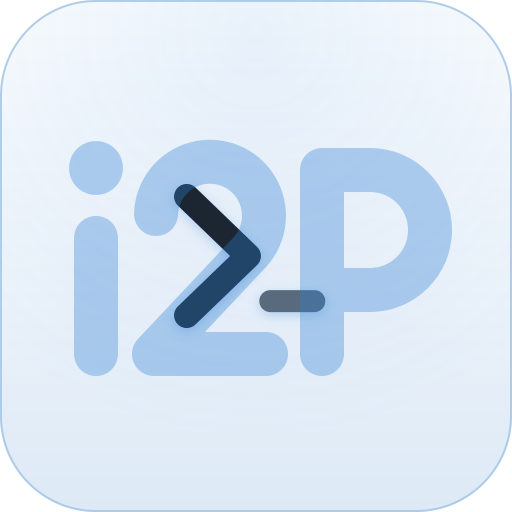

Ключ контакта вместо номера телефона.
Профиль создаётся локально, без регистрации по телефону или почте. Обменяйтесь карточками контакта и сверьте отпечатки по доверенному каналу.

gipny.i2pПереписка со сквозным шифрованием
Общайтесь и передавайте файлы без привязки к номеру телефона. Ключи и история хранятся на вашем устройстве, а встроенный роутер подключает приложение к I2P.
Клиенты для Linux, Windows, macOS, Android и браузера.
Как это устроено
Профиль создаётся локально, без регистрации по телефону или почте. Обменяйтесь карточками контакта и сверьте отпечатки по доверенному каналу.
Личные чаты используют X3DH и Double Ratchet. Сообщения и файлы шифруются до передачи релеям, а расшифровываются на устройствах участников.
Отдельный роутер устанавливать не нужно. При недоступности I2P или релеев доставка может задержаться; прямой IP-канал для сообщений не используется.
История и ключи сохраняются на устройстве. Нативное приложение использует защищённое хранилище ОС; веб-клиент — зашифрованное хранилище браузера. Пароль защищает закрытый профиль, но не заражённую систему.
Файлы передаются зашифрованными частями. Получатель проверяет целостность файла до подтверждения завершения. Поддерживаемые изображения проходят очистку метаданных, если она включена; очистка PDF пока доступна только в нативном приложении.
Сверьте отпечаток контакта отдельным каналом. Обновляйте приложение из проверенного источника. Открытый код позволяет изучить защиту, но сам по себе не означает независимый аудит.
Технология I2P
I2P передаёт сообщения через зашифрованные туннели. Для связи не нужны номер телефона и прямое соединение с собеседником.
Отдельные входящие и исходящие туннели распределяют маршрут между несколькими узлами. Защита зависит от выбранного профиля и возможностей наблюдателя.
Вместо IP собеседники обмениваются контактными ключами и I2P-адресами. Отпечаток ключа проверяйте по доверенному каналу.
Роутер встроен в нативное приложение; в веб-клиенте он работает как WASM. Переписка доставляется внутри I2P.
При первом запуске роутер получает сведения об узлах и строит туннели. Это может занять несколько минут.
Многослойное шифрование и прохождение через несколько промежуточных узлов увеличивают отклик, расход трафика и нагрузку на батарею по сравнению с централизованными мессенджерами.
Нативный I2P использует NTCP2/SSU2. Для браузера предусмотрены WSS и WebRTC через транспортный мост. Они меняют вид соединения, но не гарантируют нераспознаваемость; WebRTC и CDN требуют отдельной проверки.
Готовые пакеты
Одна загрузка для вашей системы. Если браузер скрывает тип процессора, уточните устройство в списке. Все пакеты, контрольные суммы и инструкции доступны в релизах GitHub.
Приложения для компьютеров и Android
Личные чаты, группы, вложения и проверка контактов работают в приложении. На странице релиза есть пакеты, поддерживаемые архитектуры и инструкции; перед установкой проверьте требования к системе.
Открыть загрузкиRust Tauri i2pd
Выберите пакет для своей системы и архитектуры. Прочитайте инструкцию по установке и требования к защите устройства.
Задайте пароль. Приложение создаст личность и ключи локально; для хранилища нужен поддерживаемый механизм защиты операционной системы. Дайте I2P время подключиться.
Передайте свою карточку по доверенному каналу и добавьте карточку собеседника. Прежде чем обсуждать важное, сравните отпечатки контакта.
Экспериментальная WASM-версия
Вы запускаете приложение на своём устройстве: WASM-ядро шифрует сообщения, хранит профиль и работает с I2P. GitHub Pages раздаёт код и обновления; сервер GitHub не участвует в доставке переписки.
В отличие от веб-оболочки, которая управляет запущенным на сервере мессенджером, Gipny выполняет эту работу в вашем браузере. Аккаунт GitHub, установленное приложение на телефоне и сопряжение с ним не нужны.
Браузерный клиент проходит проверку. Сетевому режиму нужен доступный транспортный мост; при его отказе нет скрытого обходного подключения.
Возможности и требования веб-версии
Нужны HTTPS, WebAssembly, Worker и OPFS. Очистка данных сайта удаляет локальный профиль. Перенос и зашифрованный экспорт браузерного профиля пока не реализованы.
Ключи и зашифрованная история остаются в OPFS. WASM работает в отдельном Worker. Браузер не предоставляет все механизмы защиты памяти и хранилища нативного приложения.
Перед вами сайт проекта. Он не отправляет и не принимает сообщения, не создаёт профили и не хранит ваши ключи.
В планах
Направления развития; наличие пункта в планах не означает готовую функцию.
Удобные имена для обмена контактами. Владение именем и защита от подмены ещё требуют доработки; сейчас используйте карточки и отпечатки.
Аудио и видео — отдельное расширение. Транспорт WebRTC для переписки сам по себе ещё не означает поддержку звонков.
Независимая подпись издателя и происхождение пакетов. Возможность убрать предупреждения ОС зависит от требований платформы.
Планируем зеркала страницы в .onion и .i2p с адресами, содержащими gipny. Ключи и адреса будут проверены перед публикацией; действующих зеркал пока нет.
План зеркал и проверки адресовОткрытая разработка
Исходники, архитектура и описание защиты доступны публично. Следите за разработкой, изучайте известные ограничения и сообщайте о проблемах.